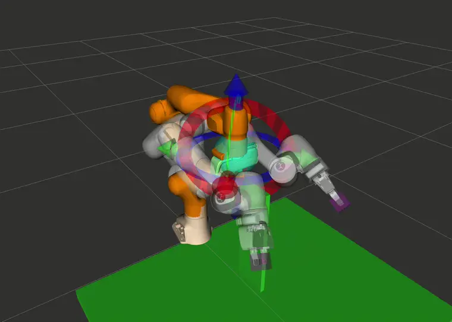

Franka Pick-and-Place with MoveIt 2基于 MoveIt 2 的 Franka 抓取与放置
Our team of four taught a Franka robot arm to pick up an object, carry it around an obstacle, and set it down on its own. I worked on the Python library that lets the arm plan safe, collision-free movements, and we ran the task both in simulation and on the real robot in the lab.我们四人团队让一台 Franka 机械臂自主完成抓取物体、绕过障碍物搬运并放下的任务。我参与开发了让机械臂规划安全、无碰撞动作的 Python 库；我们在仿真环境和实验室的真实机器人上都完成了这项任务。
- Built
franka_package, a Python library that wraps MoveIt's move_group ROS 2 interfaces for the Franka arm: motion planning, the planning scene, robot state (FK/IK), and the gripper.构建了franka_package：一个封装 MoveIt move_group ROS 2 接口的 Franka 机械臂 Python 库，涵盖运动规划、规划场景、机器人状态（正/逆运动学）和夹爪控制。 - Co-developed the MotionPlanner module: reworked it to talk to
move_groupdirectly instead of MoveItPy, and implemented planning to joint configurations, end-effector poses, Cartesian paths, and named SRDF configurations, plus trajectory execution.共同开发了 MotionPlanner 模块：将其改为直接与move_group通信而不再经由 MoveItPy，并实现了到关节构型、末端执行器位姿、笛卡尔路径和 SRDF 命名构型的规划，以及轨迹执行。 - A
pick_nodeexposes a/pickservice that loads the table, object, and obstacle into the planning scene, then grasps the object, attaches it to the hand, carries it past the obstacle, and releases it.pick_node提供/pick服务：先把桌面、物体和障碍物加载进规划场景，再抓取物体、将其附着到手爪上、搬运绕过障碍物并释放。 - Ran the task both in simulation (mock hardware) and on the real robot, and wrote an integration test that moves the arm from pose A to pose B.在仿真（模拟硬件）和真实机器人上都运行了该任务，并编写了让机械臂从位姿 A 移动到位姿 B 的集成测试。
